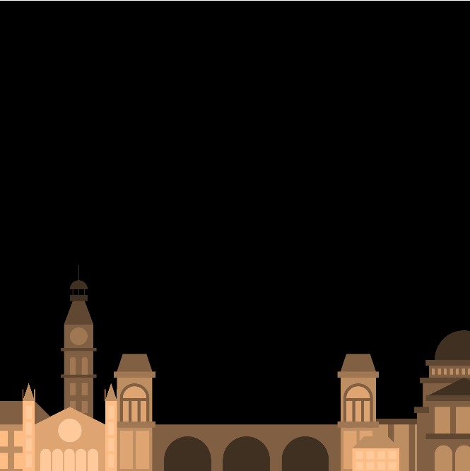

Time & Oscillation
Concept
For this assignment, I originally wanted to create a city of stars since I could use different elements in the sky as a means to implement time and oscillation. In the end, I was having a lot of fun so I tried to add in other times of day to play around with trigonometric functions a bit more. This also allowed me to experiment with creating functions that took in multiple parameters, using elapsed time, and getting to know the translate() and rotate() functions a bit more.
Process
I started by creating a cityscape as a static element in my sketch. I used functions to create each building and then added helper functions to create rows of windows and arches. I allowed each function to take in parameters for size and color so that I could create a sense of depth in the foreground, midground, and background.